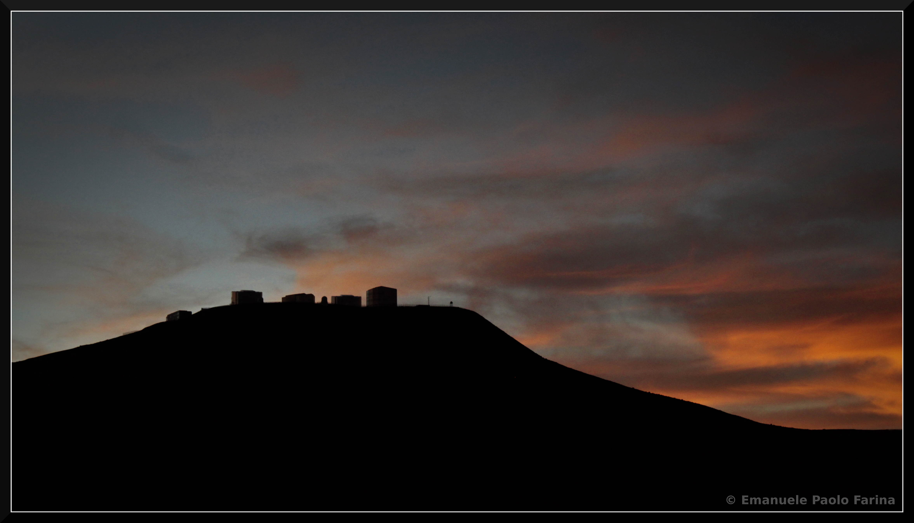
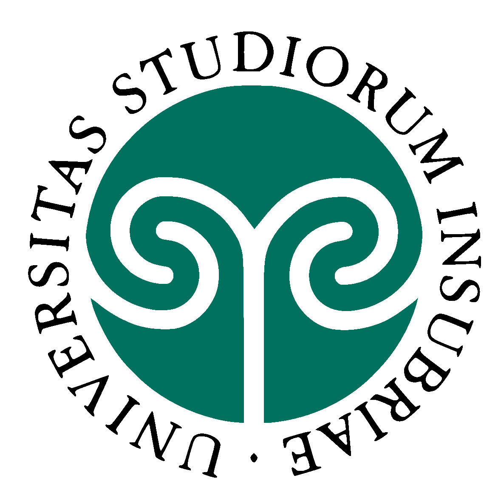

I am an observational astronomer and since October 2021 I am an associate scientist at GEMINI. Previously, I was an Archive Science Engineer in the ESO's Archive Science group (outsourced from Terma GmbH). I have also been a visitor of the Max-Planck-Institut für Astrophysik in Garching bei München, and a postdoctoral researcher at the University of California in Santa Barbara and at the Max-Planck-Institut für Astronomie in Heidelberg. I did my PhD at the Università degli Studi dell'Insubria and my undergraduate studies at the Università degli Studi di Milano-Bicocca (with some months at the Universität Zürich).
My research is mainly focused on the study of quasars and blazars from the local Universe up to the end of the Cosmic dark ages at z≈7. In particular, I am interested in their clustering properties and in the study of their circum-galactic medium.
I am instrument scientist for the GNIRS instrument at Gemini and I worked in the commissioning of the GNIRS IFUs and of IGRINS-2.

Oct. 2021 → Today
Associate Scientist at the GEMINI observatory [Hilo, Hawai'i, USA].
Oct. 2020 → July 2021
Archive Science Engineer in the Archive Science group at the European Southern Observatory (outsourced from Terma GmbH) [Garching bei München, Germany].
Jan. 2020 → Sept. 2020
Archive Science Engineer in the Archive Science and Operations groups at the European Southern Observatory (outsourced from Terma GmbH) [Garching bei München, Germany].
Jan. 2019 → Sept. 2021
Visitor at the Max-Planck-Institut für Astrophysik [Garching bei München, Germany].
Jan. 2019 → June 2019
Temporary Researcher at the Max-Planck-Institut für Astronomie [Heidelberg, Germany] in the group of Fabian Walter.
Dec. 2017 → Dec. 2018
Postdoctoral Fellow at the University of California, Santa Barbara [Santa Barbara, USA] in the ENIGMA group led by Joe Hennawi.
Sept. 2013 → Nov. 2017
Postdoctoral Fellow at the Max-Planck-Institut für Astronomie [Heidelberg, Germany] in the group of Fabian Walter.
Nov. 2012 → Aug. 2013
Temporary Research Fellow in Astronomy and Astrophysics at the Università degli Studi dell'Insubria [Como, Italy] in the group of Aldo Treves.

2012 — Dottorato di Ricerca (Ph.D. equivalent) in Astronomy & Astrophysics at the Università degli Studi dell'Insubria [Como, Italy] under the supervision of Aldo Treves.
Thesis Title: Physical and Projected Pairs of Quasars.
2009 — Laurea Specialistica (MSc) at the Università degli Studi di Milano-Bicocca and at the Universität Zürich under the supervision of Monica Colpi, Peppo Gavazzi, and Lea Giordano.
Thesis Title: Globular Cluster Systems in Virgo Cluster's Dwarf Galaxies.
2006 — Laurea Triennale (B.Sc.) at the Università degli Studi di Milano-Bicocca under the supervision of Monica Colpi and Bernadetta Devecchi.
Thesis Title: Gravitational encounters of BH binaries in globular cluster.